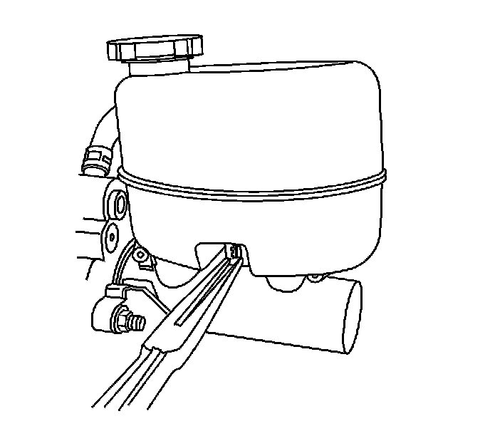
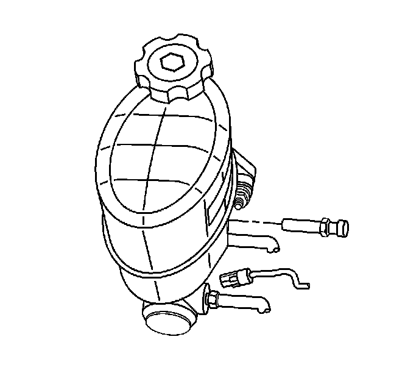

Brake Fluid Level Sensor/Switch: Service and Repair
Master Cylinder Fluid Level Sensor Replacement
Removal Procedure

1. Disconnect the electrical connector from the fluid level sensor.
2. Using needle nose pliers, compress the locking tabs at the opposite side of the master cylinder.

3. Remove the fluid level sensor.
Installation Procedure
1. Install the fluid level sensor until the locking tabs snap into place.
2. Connect the electrical connector to the fluid level sensor.